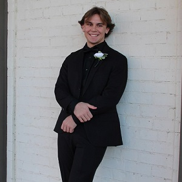

Dalton Lewellyn's Resume
Previous Work Experience
Education
Accomplishments
- Graduated High School with a 4.3 Weighted GPA while also playing three sports
- Scored a 30 on the ACT
- Currently have a 3.8 GPA in college
- Am a current member of the Honors College at The University of Alabama at Birmingham
- Nominated for the Peggy Jolly Award at UAB for superb literary skills
- All County and All Region Selection in football at the Quarterback position
- Earned the presidential scholarship at The University of Alabama at Birmingham
- Multiple all-county tournament selections in basketball
